Functional Idioms in C++
Alfons Haffmans
September 16, 2013
In this paper I review the implementation of functors, applicative
functors and monads in C++.
Contents
1 Introduction
1.1 Functional Programming
Functional programming emphasizes the use of immutable data structures and pure
functions. A pure function’s output is determined solely by its input. However, this
does not capture all the complexity of realistic programs, like state, IO and
exceptions.
In the late ’80’s and early 90’s an approach was pioneered which incorporates impure
features, like exceptions, side-effects and IO into functional programming languages.
That approach relied heavily on concepts from category theory like functors and
monads. Clearly C++ already supports impure features so does it therefore make
sense to incorporate that framework into the language ? In this article I’ll attempt to
present an answer to that question.
1.2 Support in C++
1.3 Conventions and Notation
2 Functional Idioms
2.1 Introduction
To start off, let’s try to model failure in a functional setting. A fairly straightforward
approach is to have the function return a Boolean and a value as part of a pair. In
Haskell’s function notation the signature of that function is :
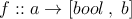
The function f takes a value of type a an returns a pair of a Boolean and a
value of type b. If the Boolean is true, an exception has occurred, and the
other member of the pair is ignored. If it’s false, the second slot contains
the result of the computation. We can generalize this to a type class M:
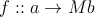
M represents the ’context’ in which the computation occurs. Here are a few ways to
apply a function to a value in context M: These are all higher-order functions are higher order functions, which apply a function
to a value in a context.
fmap takes a function a → b and applies to a value of type a in context M. The
result is a value of type b in the same context. fmap corresponds to mapping a
function over a container of values.
apply uses a function a → b ’lifted’ into the context M and similarly applies it to a
value in the context. Note that apply requires fmap to be implemented. apply is part
of an applicative functor type class. It allows easier pipe-lining of functions working on
values in contexts.
Lastly bind has a slightly different order in the type signature for historical reasons. It
takes a value in a context, and feeds that value into the function (a → M b). bind
implies the existence of apply. bind is part of the monad type class. Note that the
functions applied by fmap and apply are pure functions. bind takes a function which
returns a value in a context. It allows you to combine computations in the most
flexible way.
In addition to the type interface each implementation needs to satisfy a number of
laws. The justification for these laws is not so obvious from the intuitive introduction
above, and can be found in abstract algebra and category theory.
2.2 Currying
Currying turns any function into a higher order function of one variable [?]. The curry
of the function returns a partially applied version of the original.
The operator curry2 is a higher order function which takes a binary function as input
and returns a unary higher order function. That function is the curry of the binary
function.
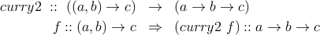
When the curried version of f is called with an argument of type a it returns another
unary function Calling this function with an argument of type b returns the same value
as f.
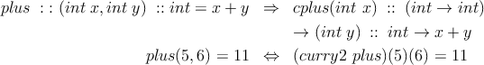
(curry2plus) is the curried version of plus. curry2 plus)(5) returns a lambda which
represents the plus function partially applied to 5. When this partially applied version
of plus is called with 6 an unsurprising 11 is the result.
Listing 1 shows an implementation of curry2 in C++:
template <typename R, typename T, typename U> std::function<std::function<R (U)> (T)> curry(std::function<R (T,U)> op) { return [=] (T x) { return [=] (U y) {return op(x, y);};}; } auto l = curry<int,int, int> ([](int x, int y) { return (5 + x) * y;}); std::cout << l(1)(1) << std::endl; //prints 6
Listing 1:
curry
for
binary
operators
Currying plays an important role in functional programming [?]. It simplifies
the design of higher order functions because we only have to consider unary
functions.
C++ does not provide a curry operator and functions are not written in curried form.
Compare this to Haskell where functions are curried by default [?, ?]. However writing
a curry operator or writing curried versions of a function has become a lot easier now
that lambda’s are supported.
2.3 Functor
Let’s start with just a little bit of category theory.
A category consists of objects and maps or arrows between the objects. The maps or
arrows are functions which take a value from the domain and to a value in the
co-domain. A simple example is the function f(n) = 2 * n + y where n is a integer.
Here domain and co-domain are the same.
Maps can be combined to form other maps. This composition operation is denoted as
(g ∘ f)(x) = g(f(x)) and is read as g after f. The objects A,B,C,.. and maps f,g,h..
form a category if they satisfy :
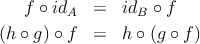
Of particular interest are mappings between categories themselves.
A very simple category is the monoid category 1. It consists of a single element ⋆ and
the identity id. It’s domain and co-domain are the same. We can construct maps
and label them as 1+, 2+,..n+... The composite of two maps is defined as
m+ ∘ n+ = (n + m)+ so that 5+ ∘ 3+ = 8+.
We can interpret this construction by letting ⋆ correspond to ℤ. Each map n+ in the
monoid corresponds to a map fn such that fn(x) = n + x, which is a curried +
operator. It’s easy to see that this correspondence respects function composition :
(fm ∘ fn)(x) = fm(fn(x)) = m + n + x = fn+m(x). and that f0 is the identity
operator.
Note that this interpretation of the monoid ⋆ is also a category. What we have just
defined is a mapping from one category (the monoid (⋆,n+)) to an other category :
(ℤ, (n+)).
A mapping between categories is called a functor. A functor maps objects and
arrows or maps from one category to an other:
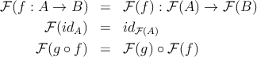
We can create an alternative interpretation using lists of integers of size n :
Ln = (a1,...,an). The identity element is the empty list L0. A natural operation on
lists is concatenation ⊕ which appends the elements of one list to the other. We
define the function fn(x) = Ln ⊕ [x]
The interpretation of the mappings 1n is that of a curried concatenation to a list of
size n Ln. Function combination is easily verified (Lm ∘ Ln)(x) = Lm+n(x). This
interpretation satisfies the conditions of a functor between the monoid (⋆,n+) and the
monoid (, (Ln⊕)).
We can now also define a functor between the category (ℤ,f) and the category
(, (Ln⊕). What that functor does is apply functions defined between elements of 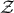
to computations involving lists of integers. The functor preserves the structure of the
category of (ℤ,f).
Can we construct a functor mapping between (ℤ,f) and (, (Ln⊕)) ?. The Functor
preserves the structure (what does that mean ??) of the category (ℤ,f) if it
satisfies :
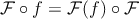
A reasonable choice of is x → [x] i.e. we map each element of ℤ to a single
list. In that case we would have (∘ f)(x) = (f(x)) = [f(x)]. So that
(f) : [x] → [f(x)].
In other words the functor would apply the mapping (or function) f : ℤ → ℤ to the
element in the list. It’s easy to see that this mapping satisfies the requirement of a
functor : (id(x)) = [id(x)] = [x] = [] ⊕ [x].
I’ve obviously ignored a lot of details. That said , it’s important to note that this
approach relies strictly on statements about function composition.
Functors in functional programming generalize the concept of mapping a
function over values in a container of typeclass M. The typeclass in Haskell is :
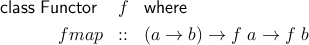
The fmap function generalizes the simple functor . fmap :: a → b corresponds to
(f). In terms of fmap the functor requirements read
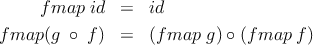
Note that the id function on the left-hand side takes an value of type a whereas the
one on the right-hand side take a container of type a.
2.4 Applicative Functors and Brackets
2.4.1 Applicatives
Applicative functors address an obvious limitation of functors: What if we
wanted to apply a function to multiple effectful results ? They were first
discussed by McBride and Patterson [...], although they were documented before
that. In Haskell’s notation applicative functors have the following type class
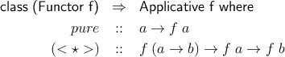
Here f represent the container. The applicative functor adds the infix operation < ⋆ >
and operation pure to those of the functor.
pure puts a value of type a into the container.
There is a close relation ship between functors and applicative functors :
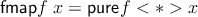
Lifting a function f into an environment using pure and applying to a value in a
context is the same as using fmap to apply f directly.
2.4.2 Brackets
In their paper [....] McBride and Paterson introduce a convenient ’bracket’ notation to
capture the application of a pure function f to a sequence of sub computations :
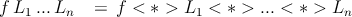
pure lifts the pure function f into the applicative functor, which is then applied to the
containers in the remainder of the bracket. Note that the structure of the
computation remains fixed. This makes brackets easier to use than using
applicatives directly. The essence of the bracket notion is captured in listing
4
2.5 Monads
The monad type class has the following declaration in Haskell :
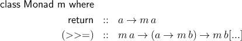
Functors an applicative functors apply pure functions to values in containers. Pure
functions have their place. They are easily combined and heir results are easily verified.
However pure functions don’t capture all the complexity of a program. For example
the computation defined in the body of the function may fail. We may want to
combine functions like that as part of a multi step computation. In the case of failure
in one of the steps the remainder of the computation should be discarded. An other
example is IO. The return type of these functions is the IO channel, so these functions
cannot be pure. We may want to combine functions which write data to an IO
channel.
Yet we do want to combine functions like that in a meaningful way.
Monads need to satisfy certain laws, the justification of which can be found in
category theory.
[TBD]...
3 The Functional Idioms in C++
3.1 General Approach
I try to provide a sketch on how to implement the functional idioms discussed in
section 2. The implemenations require that some of the C++11 standards are
supported by the compiler, notably variadic templates and lambda’s. The approach is
to provide a definition in the form of a templated struct. Typically this struct will have
curried and n uncurried version. I use stl’s std :: function template to highlight the
interface and return type. However, the speciliazation may in fact be written to
support lambda’s because lambda’s are no automatically converted to std :: function.
In some cases the return type can be cumbersome to explicitly state and auto is used
instead.
3.2 Functor
template <template<typename T1, typename... D> class F> struct functor { template<typename A, typename B> static std::function < F<B> (F<A>)> fmap(std::function <B (A)> f); template<typename A, typename B> static F<B> fmap(std::function <B (A)> f, F<A> L) { return fmap(f)(L); } };
Listing 2:
functor
in
C++
Listing 2 shows a template which defines the functor fmap from type A to type B
for a type class F. The class F can have more than one template parameter, as
indicated by the variadic template. This allows specialization for containers since they
have more than one template parameter.
3.3 Applicative Functor and Brackets
3.3.1 Applicative
In C++ we don’t have the same leeway in constructing functions names
and fixity as we do in Haskell. I’ll call (< ⋆ >) apply and use it in prefix
mode.
The apply or < ⋆ > operation of the applicative functor looks similar to fmap, except
that the function a → b is inside the ’container’ f.
template <template<typename T1, typename... D> class F> struct applicative_functor : public functor <F> { template <typename A> static F<A> pure(A val); template<typename A, typename B> static std::function < F<B> (F<A>)> apply(F <std::function<B(A)>> f ); };
Listing 3:
applicative
functor
template
in
C++
3 shows the applicative functor as a template in C++. Each individual container needs
to provide its own implementation.
3.3.2 Bracket
A bracket is a convenience function which applies an n - ary pure function to n
containers using applicative functors.
template <template<typename Tx, typename... D> class Cont, typename F, typename... T> auto bracket (F f, Cont<T>... L) { auto cf = curry<decltype(f), T... >(f); return bracket_helper<sizeof...(T), Cont , decltype(cf), T...>::bracket(cf, L...); } [...] template<template<typename Tx, typename... D> class Cont, typename F, typename T1, typename T2> struct bracket_helper<2, Cont, F, T1, T2> { static auto bracket(F cf, Cont<T1> L1, Cont<T2> L2) { return bracket(cf)(L1)(L2); } static auto bracket(F cf) { typedef decltype(cf(T1())(T2())) ret_t; return [cf] (Cont<T1> L1) { auto C = bracket_helper<1, Cont, F, T1>::bracket(cf)(L1); return [C](Cont<T2> L2) { applicative_functor<Cont> APF; auto J = APF.template apply<T2, ret_t>(C)(L2); return J; }; }; }; }; [...]
Listing 4:
applicative
brackets
in
c++
Listing 4 shows the function bracket implemented using the brackethelper struct.
The template of bracket has several classes. The first class is the type of the
container. The second type is the type of the function or functor object. A variadic
template is used to refer to the remaining types of the container instances. The
sizeof... operator is used to determine the number of container instances passed
in.
First we convert n-ary the function f by currying it : f :: (x,y,z) → k ⇒ fc :: x → y → z → k.
fc is lifted into the container using pure pure fc = Lx → y → z → k. This is then
applied to the first container L1 and results in a lifted partially applied function
Ly → z → k. That is we have taken the function fc and applied it to the value in the
first container. The result is a container of a function with a cardinality one less then
fc.
We keep doing this until a result is returned. The implementation below applies the
curried function recursively to a the containers. The bottom of the recursion is
reached when the last container is processed.
The value of the sizeof... operator, i.e. the number of container instances passed in
determines which specialization of brackethelper to call.
3.4 Monad
template <template<typename T1, typename... D> class F> struct monad : public applicative_functor <F> { template <typename A> static F<A> mreturn (A val) { return applicative_functor<F>::pure(val); } template<typename A, typename B> static std::function < F<B> (std::function< F<B> (A) > ) > bind(F<A> val); };
Listing 5:
monad
defintion
in
C++
Monads extend applicative functors and that’s reflected in the definition shown
in listing 5. I’ve used mreturn for return and bind for >>=. mreturn
is identical to the pure function for applicative functors. I use a variadic
template to allow monad to be specialized for stl containers which have multiple
template arguments. The bind method in 5 is curried : It takes a monad of
type A and return a function. This function takes an argument of type A
and returns a monad of type B, just like haskell’s monad definition shown
above.
4 Maybe
4.1 Motivation
A simple way to capture failure without throwing an exception is to have the function
return a value and a boolean as part of a tuple. If the boolean is true, the
computation succeeded and the vlaue is valid. Otherwise, an exception has occured.
Function composition would also not be so obvious. The first function in the
chain would have a simple type as an argument, bout it would return a tuple.
The second function in the chain would now need to accept this tuple as an
argument.
Another drawback is that This is not a type safe approach. The type of this tuple
would be a data type and a boolean. Nothing would indicate that this is a special
tuple, signifying a failed computation.
Haskell introduces the Maybe type class to handle this. The Maybe type class has two
constructors or values :
Here a is the data type whose value we compute. A successful computation returns
Justa and a failed computation return None. Such computataions would have the
following function signature : a → Maybe b.
The functor would apply the function to the value ’inside’ Just, or return None if the
input was None. The Monad allows you to combine functions which return a Maybe
type.
4.2 Maybe Template Class
The Maybe template class (or struct) in listing 6 is an attempt to capture the spirit of
Haskell’s Maybe type class. The Maybe class is in fact a wrapper around a
std :: pair < A,bool >, where A is the template class. If the boolean member of
this pair is false, the Maybe represent a failed computation. Otherwise it
represents a successful one and the dereference operator ⋆ can be used to get the
value.
The Maybe class has two constructors. The default constructor creates a ’failed’ state.
The other constructor takes a value of type A and instanciates a successful
computation.
The constuctors are private and the caller has to use the Just or None factory
methods to instantiate the appropriate Maybe instance.
The Maybe structure returned by None() as presented here is different from Haskell’s
None. In C++ this failure still has a type associated with it. It’s type is
Maybe < A > and it’s the internal state which indicates that the computation
failed.
This means that we need to instantiate a different Maybe object in the Functor, even
if the input is a amybe representing a failed computation.
However the comparison of two failed computations should succees, regardless of the
class type. This is done by overloading the comparison operator as shown in Listing 7.
In contrast the comparison of two Maybe instances should fail if they represent a
successful computation but of different value types. The eq method is used to
determine equality if the type classes are the same.
In addition to the comparison operator listing 7 shows convenience function just and
none to tersely instantiate Maybe’s. Use of these functions is shown in listing
8.
template <typename A> struct Maybe { typedef A value_type; Maybe(const Maybe& o) : val(o.val){} void operator=(const Maybe& o) = delete; std::ostream& pp(std::ostream& strm) const { strm << ”Maybe<” << typeid(A).name() << ”>”; if (val.second) { strm << ”[Just(” << val.first << ”)]”; } else { strm << ”[None]”; } return strm; } static Maybe Just(const A& a) { return Maybe(a); } static Maybe None() { return Maybe(); } bool eq (const Maybe& m) const { return (val.second == m.val.second) && (val.first == m.val.first); } const A& operator*() { return val.first; } private: Maybe() : val(std::make_pair(A(), false)) {} explicit Maybe(const A& a) : val(std::make_pair(a,true)){} const std::pair<A, bool> val; };
Listing 6:
Implementation
of
the
Maybe
class
template<typename A> Maybe<A> just(A val) { return Maybe<A>::Just(val); } template<typename A> Maybe<A> none() { return Maybe<A>::None(); } template<typename A> std::ostream& operator<<(std::ostream& strm, const Maybe<A>& M) { M.pp(strm); return strm; } template<typename A, typename B> bool operator==(const Maybe<A>& l, const Maybe<B>& r) { if (l.eq(l.None()) && r.eq(r.None())) return true; return false; } template<typename A> bool operator==(const Maybe<A>& l, const Maybe<A>& r) { return l.eq(r); } template<typename A, typename B> bool operator!=(const Maybe<A>& l, const Maybe<B>& r) { return !(l==r); }
Listing 7:
auxilliary
function
for
the
Maybe
class
[...] auto val = just(”hello”); std::cerr << val << std::endl; auto val2 = none<int>(); std::cerr << val2 << std::endl; return 0; [...]
Listing 8:
Example
of
the
use
of
Maybe
4.3 Functor
The Maybe structure can be thought of as a value container. The functor method
fmap can be used to apply a pure function to the value contained in the Maybe
without explicitly pulling the value out of the conatiner. If the functor is applied to a
failed computation a failed computation is returned.
Listing 9 shows the specialization of the functor template introduced in section 2.3.
The speciliazation shows both a curried and uncurried version of the fmap
method.
The expression decltype(f(A())) is used to determine the return type, where f is the
function or lambda passed in and A is the type of the input parameter.
template<> struct functor<Maybe> { template<typename A, typename lambda> static auto fmap(lambda f) ->std::function<Maybe<decltype(f(A()))> (Maybe<A>) > { return [f](Maybe<A> m) -> Maybe<decltype(f(A()))> { if (m == m.None()) { return Maybe<decltype(f(A()))>::None(); } return just(f(*m)); }; } template<typename A, typename lambda> static auto retval(lambda f, Maybe<A> m) -> Maybe<decltype(f(A()))>; template<typename A, typename lambda> static auto fmap(lambda f, Maybe<A> m) -> Maybe<decltype(f(A()))> { return fmap<A,lambda>(f)(m); } };
Listing 9:
Maybe
Functor
Listing 8 illustrates the use of the Maybe functor. The lambda f returns a
string.
[...] auto f = [] (int x) { return ”xxxxxx”; }; auto v1 = just(10); auto v2 = functor<Maybe>::fmap(f, v1); auto v3 = functor<Maybe>::fmap<int>(f)(v1); std::cerr << v1 << std::endl; std::cerr << v2 << std::endl; std::cerr << v3 << std::endl; if (v2 == v3) { std::cerr << v2 << ” == ” << v3 << std::endl; } [...]
Listing 10:
example
of
the
maybe
functor
4.4 Applicative Functor
template<> struct applicative_functor<Maybe> : public functor <Maybe> { template <typename A> static Maybe<A> pure(A val) { return just(val); }; template<typename A, typename lambda> static auto apply(Maybe<lambda> F , Maybe<A> m) -> decltype(functor<Maybe>::retval(*F, m)) { return functor<Maybe>::fmap(*F, m); }; template<typename A, typename lambda> static auto apply(Maybe<lambda> F) -> std::function<decltype(functor<Maybe>::retval(*F, Maybe<A>::Just(A()))) (Maybe<A>)> { return [F] (Maybe<A> m) { return apply(F,m); }; }; };
Listing 11:
Maybe
applicative
functor
Listing 11 shows the specialization of the applicative functor template for the Maybe
class. Instead of using std :: function the specialization uses a more generic type
lambda for the function type. This allows the use of inline lambda’s, which otherwise
would not be possible. The pure method lifts a value into the Maybe context. In
subsection 2.4.1 I mentioned that there is a close relationship between te functor
and the applicative functor. This is used to implement the apply function.
F is the Maybe instance containing the lifted function. It is derefenced to
obtain the function for fmap. It would make sense to test the result of the
dereference. However it is not possible to instantiate an Maybe with an empty
lambda.
The use of the applicative functor is illustrated in listing 12.
[...] typedef std::pair<int, std::string> arg_t; Maybe<arg_t> L = just(std::make_pair(9,std::string(”hello”))); auto get_string = [] (arg_t arg) { return arg.second; }; auto lm = applicative_functor<Maybe>::pure(get_string); auto v1 = applicative_functor<Maybe>::apply(lm, L); std::cerr << v1 << std::endl; auto v2 = applicative_functor<Maybe>::apply<arg_t>(lm)(L); std::cerr << v2 << std::endl; [...]
Listing 12:
example
of
the
maybe
applicative
4.5 Monad
Monads are used to combine functions which encapsulate exceptions in Maybe ’s.
Listing 13 shows The specialization of the monad template from section 2.5 for the
Maybe class. The monad is derived from the applicative functor discuseed in the
previous section. The mreturn method uses it’s pure method to put a value into a
Maybe instance.
The bind method has a Maybe instance and a function which returns a
Maybe as arguments. Unless the input is a failed computation and is equal
to Maybe < T >:: None(), the value contained in the Maybe instance is
passed on to the function. The result is another Maybe instance returned by
bind.
template <> struct monad<Maybe> : public applicative_functor <Maybe> { template <typename A> static Maybe<A> mreturn (A val) { return applicative_functor<Maybe>::pure(val); } template<typename A, typename lambda> static auto bind(Maybe<A> m) { return [&m](lambda F) { if (m == m.None()) { //constructors are private so I do this in a bit of a rond-about way. return Maybe<typename decltype(F(A()))::value_type>::None(); } return F(*m); }; }; template<typename A, typename lambda> static auto bind(Maybe<A> m, lambda F) -> decltype(Maybe<typename decltype(F(A()))::value_type>::None()) { return bind<A,lambda>(m)(F); }; };
Listing 13:
Maybe
monad
The use of the Maybe monad is illustrated in listing ??. The lambda called
lambda returns a Maybe < std :: string > with a string value in it when the
input is positive. Otherwise it returns a ’None’ instance of the Maybe class,
which represents some kind of failure. The monad binds the lambda and a
Maybe < int > instance which contains 56 as well as one which contains -89. In the
former case it results in a suucessful computation. In the latter case in a failed
one.
The listing also shows how the monad returned by bind is passed onto a second
monad which binds it to an in-line lambda function.
[...] auto val1 = just(56); auto lambda = [](int x) { if ( x > 0) return just(std::string(”good !”)); return none<std::string>(); }; auto val2 = monad<Maybe>::bind(val1, lambda); std::cerr << val1 << std::endl; std::cerr << val2 << std::endl; std::cerr << monad<Maybe>::bind(just(-89), lambda) << std::endl; std::cerr << monad<Maybe>::bind(monad<Maybe>::bind(just(-89), lambda), [](const std::string& val) { std::cerr<<”===> val” << std::endl; return just(val); }); std::cerr << std::endl; std::cerr << monad<Maybe>::bind(monad<Maybe>::bind(just(89), lambda), [](const std::string& val) { std::cerr<<”===> val ” << val << std::endl; return just(val); }); [...]
Listing 14:
Maybe
monad
example
5 Either
5.1 Motivation
The Maybe type discussed in the previous section was used to handle exceptions ins a
type safe and functional way. One drawback was that it is not possible to pass on a
stack trace or othet information on the failure. If the computation fails no
additional information is passed back to the caller other than that the state is
None.
Haskell’s Either type class represents a computation which can return two values:
The Either type has two slots, with two different data types called Left and Right.
Data in in either of these two slots, but not both. So instead of using the Maybe
type instead the Either type can be used. The result of the computation
could be stored in the Right slot and exception information in the Left
slot.
5.2 Either Type Class
The Either template class shown in 15 is a wrapper around a C++ tuple with three
types : std :: tuple < L,R,bool >. The boolean in the last slot indicates which of the
other two slots is active. The implementation does require that the types L and R
have default constructors. As we ’ll see this does preclude us from using C++
lambda’s for the applicative functor.
The constructors of the Either class are private and the Left or Right factory
methods must be used to create an Either instance. The assignment operator is
deleted. Either instances cannot be reasigned and it makes them somewhat
immutable.
The Left() and Right() methods are used to determine which ’slot’ is set. The (lower
case) left() and right() return the value in the slot. These functions are
unsafe, in the sense that the caller would need to test wich slot the active one
is before calling these. The auxilliary functions Left(..) and Right(...) in
listing 16 are safer versions of the these methods. They return a Maybe
instance.
template <typename L, typename R> struct Either { typedef L left_value_type; typedef R right_value_type; Either(const Either& o) : value(o.value) {} void operator=(const Either&) = delete; static Either Left(const L& l) { return Either(l, true); } static Either Right(const R& r) { return Either(r); } bool Left() const { return std::get<2>(value); } bool Right() const { return (! Left()); } const L& left() const { //return value.first.first; std::get<0>(value); } const R& right() const { //return value.first.second; std::get<1>(value); } std::ostream& pp(std::ostream& strm) const { strm << ”Either<” << typeid(L).name() << ”,” << typeid(R).name() << ”>”;; if (std::get<2>(value)) { strm << ”[” << left() << ”, null]”; } else { strm << ”[null,” << right() << ”]”; } return strm; } bool eq(const Either& o) const { auto eqval = [this] (const value_t& l, const value_t& r) { if (std::get<2>(value)) return std::get<0>(l) == std::get<0>(r); return std::get<1>(l) == std::get<1>(r); }; return ((std::get<2>(value) == std::get<2>(o.value)) && eqval(value, o.value)); } private : Either (L val, bool left) : value(std::make_tuple(val,R(), true)) {} Either (R val) : value(std::make_tuple(L(),val,false)) {} typedef std::tuple<L,R,bool> value_t; value_t value; };
Listing 15:
Either
type
class
template<typename A, typename B> std::ostream& operator<<(std::ostream& strm, const Either<A,B>& E) { E.pp(strm); return strm; } template<typename A, typename B> Maybe<A> Left(const Either<A,B>& e) { if (e.Left()) { return just(e.left()); } return none<A>(); } template<typename A, typename B> Maybe<B> Right(const Either<A,B>& e) { if (e.Right()) { return just(e.right()); } return none<B>(); } template<typename A, typename B,typename C, typename D> bool operator==(const Either<A,B>& a, const Either<C,D>& b) { return false; } template<typename A, typename B> bool operator==(const Either<A,B>& a, const Either<A,B>& b) { return a.eq(b); } template<typename A, typename B,typename C, typename D> bool operator!=(const Either<A,B>& a, const Either<C,D>& b) { return !(a==b); }
Listing 16:
Auxilliary
functions
for
the
Either
type
class
Listing 17 shows a simpel example of the use of the Either class.
[...] auto val = Either<std::string, std::string>::Left(”hello”); std::cerr << val << std::endl; auto v2 = Either<std::string, std::string>::Right(”hello”); std::cerr << v2 << std::endl; auto v3 = v2; std::cerr << v3 << std::endl; [...]
Listing 17:
Example
of
the
use
of
Either
5.3 Functor
The curried and uncurried version of the Functor template speciliaztion for the
Either is shown in listing 18. The Either template class has tow type parameters:
One for its left and one for its right slot.
The body of fmap applies the function to the contents of the right slot of the
Either instance. If the left slot is used, fmap returns a new Either instance
with its left value set to the left value of the input. The type of the right
slot of the returned Either instance is determined by using decltype(FA())
where f is the input lambda and A the type of the right slot of the Either
instance.
The returm type of fmap is declared auto and is specified after the input parameter
list, since it refers back to input parameter f. The implementatioon of fmap for
Maybe and Either are very similar.
template <> struct functor<Either> { //curried version template<typename T, typename A, typename lambda> static auto fmap(lambda f) -> std::function < Either<T, decltype(f(A()))> (Either<T,A>)> { return [&f](Either<T,A> e) { return fmap(f, e); }; } // uncurried, for functions.. template<typename T, typename A, typename lambda> static auto fmap(lambda f, Either<T,A> e) -> Either<T, decltype(f(A()))> { if (e.Left()) { return Either<T, decltype(f(A()))>::Left(e.left()); } return Either<T, decltype(f(A()))>::Right(f(e.right())); }; };
Listing 18:
Either
Functor
Listing 19 shows an example of the use of the functor. The lambda adds 2 to the
input and is mapped over two different instances of Either. In the first instance the
right slot contains the value 45. Fmap returns Either 47. The second instance
contains a string. Here fmap returns a instance with this string in its left
slot.
Note that fmap can’t change the active slot of the Either value it is applied to. The
input function to fmap is a pure function and it evaluates without side effects
captured in an Either instance.
[...] auto v1 = Either<std::string, int>::Right(45); auto v2 = Either<std::string, int>::Left(”a value”); auto l = [](int x) { return 2+x; }; std::cerr << v1 << ” --> ” << functor<Either>::fmap(l, v1) << std::endl; std::cerr << v2 << ” --> ” << functor<Either>::fmap(l, v2) << std::endl; [...]
Listing 19:
Example
of
the
Either
functor
5.4 Applicative Functor
Listing 20 shows the specialization of the applicative functor template.
Similar to the functor the applicative functor also works only on the right slot of the
Eitehr instance. The pure method puts a value into the right slot of an
Either instance. The bind method is implemeneted using fmap. The unsafe
right method is called on to get the input function to fmap from the right
slot.
template <> struct applicative_functor<Either> : public functor <Either> { template <typename T, typename A> static Either<T,A> pure(A val) { return Either<T,A>::Right(val); } template<typename T, typename A, typename lambda> static auto apply(Either<T, lambda> F , Either <T, A> m) { return functor<Either>::fmap(F.right(), m); }; template<typename T, typename A, typename lambda> static auto apply(Either<T, lambda> F) { return [F] (Either<T, A> m) { return apply(F,m); }; }; };
Listing 20:
Either
applicative
functor
The role of the applicative functor is to apply n-ary pure functions to values in a
conext like Either. The pure method is used to ’lift’ the function into the container,
and bind is than use dto apply the function to values in the containers. This is
illustared in listing 21 where the applicative functor is used to add two values
contained in the right slot of two different Either instances together using the
std :: plus C++ function object.
The first step is to curry std :: plus, since the applicative functor works only with
unary function. The return type of curry is captured explicitly as a instance of
std :: function. The alternative would be to capture the return type using the auto
declaration, but in that case the type would in fact be that of a C++ lambda.
Since C++ lambda’s doen’ have default constructors this would not work
with the fucntor and applicative functor specialization presented here. The
implementation of Either assumes that its template classes have default
constructors.
Next the curried function cf is lifted into the Either context using pure. The first
application of bind returns an Either instance with cf partially applied to 23. The
second application of bind returns an Either instance with 68 in its right
slot.
[...] auto f = std::plus<int>(); std::function<std::function<int(int)> (int)> cf = curry<decltype(f),int,int>(f); std::cerr << ” 23 + 45 = ” << f(23,45) << std::endl; std::cerr << ” 23 + 45 = ” << cf(23)(45) << std::endl; auto F = applicative_functor<Either>::pure<std::string>(cf); auto V1 = applicative_functor<Either>::pure<std::string>(23); auto V2 = applicative_functor<Either>::pure<std::string>(45); std::cerr << V1 << ” ” << V2 << std::endl; auto A1 = applicative_functor<Either>::apply(F, V1); auto A2 = applicative_functor<Either>::apply(A1, V2); std::cerr << A2 << std::endl; [...]
Listing 21:
Either
applicative
5.5 Monad
template <> struct monad<Either> : public applicative_functor <Either> { template <typename T, typename A> static Either<T, A> mreturn (A val) { return applicative_functor<Either>::pure<T,A>(val); } template<typename T, typename A, typename lambda> static auto bind(Either<T,A> e) { return [e](lambda F) { return bind(e, F); }; } template<typename T, typename A, typename lambda> static auto bind(Either<T,A> e, lambda F) { if (e.Left()) { return Either<T,typename decltype(F(A()))::right_value_type>::Left(e.left()); } return F(e.right()); } };
Listing 22:
Either
monad
int eim_2() { std::function< Either<std::string, int> (int)> f = [](int x) { if (x < 0) { return Either<std::string, int>::Left(std::string(”smaller than 0”)); } return Either<std::string, int>::Right(1.15*x-10);; }; std::function< Either<std::string,int> (int, Either<std::string, int>)> repeat = [&](int n, Either<std::string, int> e) { if ( n == 0) return e; std::cerr << n << ” : ” << e << std:: endl << ” -> ”; return repeat(n-1, monad<Either>::bind(e,f)); }; auto v = repeat(12, Either<std::string, int>::Right(45)); std::cerr << v << std::endl; return 0;
Listing 23:
Example
of
the
Either
monad
6 Lists and ZipLists
6.1 Functor
For lists like std :: list and std :: foward_list fmap corresponds to map and is
equivalen to iteration over the elements in the list.
6.2 Applicative Functor
6.2.1 List
For lists there a are two possible implementations for the applicative functor. In both
cases a list of functions is applied to a list of values, but in one case we apply each
function to every value and in te other we apply a function only if we have a value in
the corresponding position in the argument list. In the latter case we ’zip’ the list of
the functions and values.
template<> struct applicative_functor<std::forward_list> :public functor<std::forward_list>{ template<typename A> static std::forward_list<A> pure(A v) { return std::forward_list<A>(1,v); } [...] template<typename A, typename B, typename lambda> static std::function< std::forward_list<B> (std::forward_list<A>)> apply(std::forward_list<lambda> F) { return [F](std::forward_list<A> L) { std::forward_list<B> acc; for (auto& func : F) { for (auto& arg : L) {acc.push_front(func(arg));} } acc.reverse(); return acc; }; }; };
Listing 24:
std::forward_list
is
an
applicative
functor
The applicative functor for std :: forward_list is shown in listing 24. The body of
apply consists of two nested loops traversing the input lists.
6.2.2 ZipList
template<typename A> using zip_list = std::list<A>; [...] template<> struct applicative_functor<zip_list> :public functor<zip_list>{ template<typename A> static zip_list<A> pure(A v) { return applicative_functor<std::list>::pure<decltype(v)>(v); } [...] template<typename A, typename B, typename lambda> static std::function< zip_list<B> (zip_list<A>)> apply(zip_list<lambda> F) { return [F](zip_list<A> L) { zip_list<B> acc; auto it1 = F.begin(); auto it2 = L.begin(); while (it1 != F.end() && it2 != L.end()) { auto func = *it1; auto arg = *it2; acc.push_front(func(arg)); it1++; it2++; } acc.reverse(); return acc; }; }; };
Listing 25:
ziplist
is
an
applicative
functor
In listing 25 I show the implementation of the applicative functor for the zip list based
on std :: list. The implementation of the functor is a straight forward map and is
not shown. In the body of the apply method, the two lists are traversed
in parallel. The traversal stops when either one of the lists has run out of
elements.
forward_zip_list<int> L = {2, 5, 10}; auto f = [](const int& c) { std::cerr << c << ”,”; return c;}; auto lifted_lambda_1 = applicative_functor<std::list>::pure(f); applicative_functor<std::list>::apply<int,int>(lifted_lambda_1)(L); std::cerr << std::endl; //prints 2,5,10 [...] auto lifted_lambda = applicative_functor<zip_list>::pure(f); applicative_functor<zip_list>::apply<int,int>(lifted_lambda)(L); //prints 2,
Listing 26:
the
applicative
functor
for
list
and
ziplist
Listing 26 shows a simple example of how the applicative functors for list and
zip list differ. A simple lambda function is lifted into a list and applied to a
list of integers. For the list case all the elements are printed. For the zip
list only one element is printed because the list of functions has only one
element.
6.3 Brackets
[...] typedef int T1; typedef char T2; typedef std::string T3; typedef applicative_functor<std::forward_list> apf_t; m_t<T3> L3 = {std::string(”hello”), std::string(”goodbye”)}; auto f3 = [] (T1 a, T2 b, T3 c) { return std::make_tuple(a,b,c);}; auto R3 = bracket(f3, L1, L2, L3); std::cout << R3 << std::endl; [...] [(1,y,hello),(1,y,goodbye),(1,x,hello),(1,x,goodbye),(2,y,hello),(2,y,goodbye),(2,x,hello),(2,x,goodbye),(3,y,hello),(3,y,goodbye),(3,x,hello),(3,x,goodbye),]
Listing 27:
applicative
functor
for
the
std::forward_list
using
brackets
Listing 27 I show how brackets cane be used to apply a function to multiple
lists.
template<typename a> using s_t = std::shared_ptr<a>; typedef applicative_functor<std::shared_ptr> apf_t; s_t<T1> L1 = apf_t::pure(1); s_t<T2> L2 = apf_t::pure(’a’); s_t<T3> L3 = apf_t::pure(std::string(”hello”)); auto f3 = [] (T1 a, T2 b, T3 c) { return std::make_tuple(a,b,c);}; auto R3 = bracket(f3, L1, L2,L3); std::cout << R3 << std::endl; //std::shared_ptr<St5tupleIIicSsEE>((1,a,hello))
Listing 28:
applicative
functor
for
shared
pointers
applied
using
bracket
notation
In listing 28 the data in three separate pointers is combined to create a pointer to a
tuple. Again notice that the function is pure in that it does not reference the container
the data was in.
6.4 Monad
template<> struct monad<std::list> : public applicative_functor<std::list> { template<typename A, typename B> static std::function < std::list<B> (std::function< std::list<B> (A) > ) > bind(std::list<A> M) { return [M](std::function<std::list<B> (A)> f) { std::list<B> R; std::list<std::list<B>> res = map(f, M); for (auto& list : res) { R.insert(R.end(), list.begin(), list.end()); } return R; }; } [...] };
Listing 29:
monad
for
std::list
The implementation for the stl std :: list container is showm in listing 29. I’ve elided
the implementation of mreturn, which is passing its argument on to the applicative
functor’s pure method. Function f is mapped over list M. Since the return
type of f is a list the result is a list of lists. The this list is flattened, i.e. the
lists are merged into a single list B which is then returned. This flattening
operation is an essential part of the monad. It allows monadic operations to be
combined.
7 Shared Pointers
7.1 Shared pointers
A shared pointer is another example of a container which holds a value of a particular
type. The functor implementation for shared pointers is shown in list 30. fmap
returns a new shared pointer holding the result of the function application. We need to
return a new shared pointer because the input and return types of f may be different.
Also note that if the derefrence fails, an empty shared pointer is returned, rather than
an exception thrown.
template <> struct functor<std::shared\_ptr> { template<typename A, typename B> static std::function<std::shared_ptr<B> (std::shared_ptr<A>)> fmap (std::function<B(A)> f) { return [=](std::shared_ptr<A> v) { if (v) { return std::make_shared<B>(f(*v)); } return std::shared_ptr<B>(nullptr); }; } template<typename A, typename B, typename F> static std::function<std::shared\_ptr<B> (std::shared\_ptr<A>)> fmap (F f) { return [=](std::shared\_ptr<A> v) { if (v) { return std::make_shared<B>(f(*v)); } return std::shared\_ptr<B>(nullptr); }; } };
Listing 30:
shared
pointer
as
container
7.2 Functor
7.3 Applicative Functor
7.4 Monad
template<> struct monad<std::shared_ptr> : public applicative_functor<std::shared_ptr> { template<typename A, typename B> static std::function < std::shared_ptr<B> (std::function< std::shared_ptr<B> (A) > ) > bind(std::shared_ptr<A> M) { return [M](std::function<std::shared_ptr<B> (A)> f) { if (M) { return f(*M); } return std::shared_ptr<B>(); }; } [..] };
Listing 31:
monad
implemention
for
std::shared_ptr
In 31 I show the monad implementation for std :: sharedptr. The validity of the
shared pointer is checked before it is dereferenced and its value passed on to the
function f. If the shared pointer is empty (or invalid), an empty shared pointer of type
B is returned. This implies that a chain of monadic computations can return null if
any one of its individual computations fails.
8 List of Shared Pointers
8.1 Functor
typedef std::tuple<int,std::string> C; std::list<std::shared\_ptr<C>> L = {std::shared\_ptr<C>{new C(10, ”a”)}, std::shared\_ptr<C>{new C(20, ”b”)}, std::shared\_ptr<C>{new C(3467, ”mnhjk”)}}; auto F = functor<std::shared\_ptr>::fmap(std::function<C (C)>([](const C& c) { std::cerr << c << std::endl; return c;})); functor<std::list>::fmap(F, L); return 0;
Listing 32:
mapping
over
a
list
of
shared
pointers
A functor gives the ability to apply a pure function to a value in a container.
This decouples the values and the functions that operate on them from the
containers these values may be in. For example, consider a list of shared
pointers.
In listing 32 I define a function show which prints out the value of type C. I then
combine two functors, one for each container to apply show to each shared pointer in
the list. Lists of pointers are relatively standard in C++ programs. But functors can
also be defined for unary functions a → b.
8.2 Applicative Functor
Applicative functors can be extended to combinations of containers like lists of shared
pointers. The code snippet in listing 33 shows the functor implementation for a list of
shared pointers. fmap can be written as a straightforward combination of fmap for
the shared pointer and the list container. Listing 33 shows a code snippet of the
applicative functor definition for a forward list of shared pointers. In this case we can’t
write the applicative as a combination of two applicative functors. The fcuntion in
the definition for the applicative functor for lists is not a reference. apply
encapsulates the access to the data stored in the shared pointer elements of the
list.
struct functor<forward_list_of_ptr> { [...] template<typename A, typename B, typename F> static std::function<forward_list_of_ptr<B> (forward_list_of_ptr<A>)> fmap (F f) { auto F = functor<std::shared_ptr>::fmap<A,B>(f); return [F](forward_list_of_ptr<A> L) { return functor<std::forward_list>::fmap(F, L); }; } };
Listing 33:
fmap
implementation
for
a
list
of
shared
pointers
template<typename A> using forward_list_of_ptr = std::forward_list<std::shared_ptr<A>>; [...] template<> struct applicative_functor<forward_list_of_ptr> :public functor<forward_list_of_ptr> { [...] template<typename A, typename B, typename lambda> static std::function< forward_list_of_ptr<B> (forward_list_of_ptr<A>)> apply(forward_list_of_ptr<lambda> F) { return [F](forward_list_of_ptr<A> L) { forward_list_of_ptr<B> acc; for (auto& func : F) { for (auto& arg : L) { auto res = applicative_functor<std::shared_ptr>::apply<A,B,lambda>(func)(arg); acc.push_front(res); } } acc.reverse(); return acc; }; }; }
Listing 34:
applicative
functor
for
a
list
of
shared
pointers
forward_list_of_ptr<int> L = {std::make_shared<int>(5),std::make_shared<int>(15),std::make_shared<int>(25),std::make_shared<int>(35)}; auto f = [](const int& c) { std::cerr << c << ”,”; return c;}; functor<forward_list_of_ptr>::fmap<int,int>(f)(L); auto lifted_lambda = applicative_functor<forward_list_of_ptr>::pure(f); applicative_functor<forward_list_of_ptr>::apply<int,int>(lifted_lambda)(L); std::cerr << std::endl;
Listing 35:
example
for
list
of
pointers
In listing 35 I show how a function can be mapped over a list of pointers, using its
functor and appplicative. The results are not too surprising.
8.3 Monad
9 Unary Operations
9.1 Unary Operations and Curried Functions
9.2 Functor
template <typename A, typename B> struct unary_op { };
Listing 36:
unary
operator
First I define the unary operator type in 36. A unary operator → constructs a unary
function :(→)r a => (r → a). Next I’ll provide an implementation for unary operators
in 37
template<> struct functor<unary_op> { template<typename A, typename B, typename R> static auto fmap (std::function<B(A)> f) { return [f](std::function<A(R)> g) { return [f,g] (R x) { return f(g(x)); }; }; }; template<typename A, typename B, typename R> static std::function<B (R)> fmap (std::function<B(A)> f, std::function<A(R)> g) { return [f,g](R x) -> B { return f(g(x)); }; }; };
Listing 37:
functor
for
unary
operators
For a unary operator f in fmap would be (→)r and fmap :
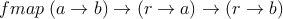
fmap takes a function (a → b) and applies it after function (r → a) to yield a
function (r → b). This corresponds to function composition.
9.3 Applicative Functor
9.4 Monad
10 Stateful Computations
10.1 Capturing State
A change in state s is represented by a function s → (a,s). a is the value associated
with the state change. The state s is mutable.
template<typename A, typename S> struct state_tuple { explicit state_tuple (S s) : e(std::make_pair(A(), s)), set(false){} state_tuple (A a, S s) : e(std::make_pair(a,s)), set(true) {} state_tuple(const state_tuple& s) : e(s.e), set(s.set){} std::ostream& pp(std::ostream& strm) const { if (set) { strm << e; } else { strm << ”((),” << e.second << ”)”; } return strm; } std::pair<A,bool> value() const { return std::make_pair(e.first, set); } std::pair<S,bool> state() const { return std::make_pair(e.second, true); } private : std::pair<A,S> e; bool set; };
Listing 38:
state
tuple
The state tuple in listing 38 is a thin wrapper around std :: pair which adds a few
convenience methods. A state computation takes a state of type S and returns a state
tuple of types A and S.
template<typename A, typename S> using state_computation = std::function< state_tuple<A,S> (S)>;
Listing 39:
state
computation
albel
The state class shown in 40 encapsulates the state computation and adds a few
convenience methods.
template <typename A, typename S> struct state { explicit state(state_computation<A,S> C) : C(C){} state(const state& o) : C(o.C){} state& operator= (const state& o) { if (&o == this) { return *this; } C = o.C; return *this; } std::ostream& pp(std::ostream& strm) const { strm << ”[state < ” << typeid(A).name() << ”,” << typeid(S).name() << ”]”; return strm; } state_tuple<A,S> run_state(S state) { return C(state); } private: state_computation<A,S> C; };
Listing 40:
state
template<typename A, typename S> state_tuple<A,S> runState(state<A,S> M, S state) { return M.run_state(state); }
Listing 41:
runState
The runstate method is key to the use of the state class and the function runState
executes this method by passing a state to it.
[...] std::default_random_engine de; std::uniform_int_distribution<int> di(10, 20); state_computation<int,std::uniform_int_distribution<int>> getrand = [&de] (std::uniform_int_distribution<int> s) { auto val = s(de); return state_tuple<int, std::uniform_int_distribution<int> >(val, s); }; state <int, std::uniform_int_distribution<int>> ST(getrand); int n = 10; auto S = runState(ST, di); std::cerr << ”iter : ” << n << ” ” << S << std::endl;; while ( n-- > 0) { S = runState(ST, S.state().first); std::cerr << ”iter : ” << n << ” ” << S << std::endl;; } [..]
Listing 42:
example
of
the
use
of
the
state
class
The use of the state class is illustrated in listing 42 using a random number generator.
A number is drawn from a uniform distribution of integers. getrand is the state
computation: It takes the current state of the uniform distribution and returns a
state tuple containing a random value as well as the new state. In the while
loop the state returned by the state computation is the used to generate the
next state. A monad can be used to glue subsequent state computations
together.
The state in listing 40 contains a value of type A as well as a state of type S. This
makes it a little different of the list or ptr containers which have a single type
constructor. We going to make the reasonable assumption that the type of the state is
not going to change between subsequent computations, although the type of the value
could. For example we could change the example above to have getrand
return a string in stead of an integer if the integer exceeds some threshold.
We are less likely to want to combine results by different random number
generators.
10.2 Functor
template <> struct functor<state> { template<typename S, typename A, typename B> static state<B,S> fmap (std::function<B(A)> f, state<A,S> M) { state_computation<B,S> comp =[f,&M](S s) { auto next = runState(M, s); auto value = next.value(); auto new_state = next.state().first; if (value.second) { return state_tuple<B, S>(f(value.first), new_state); } return state_tuple<B, S>(new_state); }; state <B, S> ST(comp); return ST; } // this doesn’t work (yet) template<typename S, typename A, typename B> static std::function<state<B,S>(state<A,S>)> fmap (std::function<B(A)> f) { return [f] (state<A,S> M) { state_computation<B,S> comp =[f,&M](S s) { auto next = runState(M, s); auto value = next.value(); auto new_state = next.state().first; if (value.second) { return state_tuple<B, S>(f(value.first), new_state); } return state_tuple<B, S>(new_state); }; state <B, S> ST(comp); return ST; }; } };
Listing 43:
State
functor
[...] std::default_random_engine de; std::uniform_int_distribution<int> di(10, 20); state_computation<int,std::uniform_int_distribution<int>> getrand = [&de] (std::uniform_int_distribution<int> s) { auto val = s(de); return state_tuple<int, std::uniform_int_distribution<int> >(val, s); }; state <int, std::uniform_int_distribution<int>> ST(getrand); std::function<char(int)> f = [] (int i) { if (i < 15) { return ’A’; } return ’Z’; }; int n = 10; while (n-- > 0) { auto SRT = functor<state>::fmap(f, ST); auto S = runState(SRT, di); std::cerr << S << std::endl;; } auto SRT = functor<state>::fmap<std::uniform_int_distribution<int>>(f, ST); auto S = runState(SRT, di); std::cerr << S << std::endl;; [...]
Listing 44:
Example
of
the
state
functor
10.3 Applicative Functor
template <> struct applicative_functor<state> : public functor <state> { template <typename S, typename A> static state<A,S> pure(A val) { state_computation<A,S> comp =[val](S s) { return state_tuple<A, S>(val, s); }; state <A, S> ST(comp); return ST; } template<typename S, typename A, typename B> static state<B,S> apply ( state<std::function<B(A)>, S> F, state<A,S> M) { state_computation<B,S> comp =[F,&M](S s) { auto rs1 = runState(F, s); auto resv = rs1.value(); if (resv.second) { std::function<B(A)> f = resv.first; auto MT = functor<state>::fmap<S,A,B>(f, M); auto rs2 = runState(MT, s); auto value = rs2.value(); auto new_state = rs2.state().first; if (value.second) { return state_tuple<B, S>(value.first, new_state); } return state_tuple<B, S>(new_state); } return state_tuple<B, S>(s); }; state <B, S> ST(comp); return ST; } };
[...] istack L = {1,2,3,4}; std::function<char(int)> f = [] (int i) { if (i < 3) { return ’A’; } return ’Z’; }; stack_comp pop = [] (istack s) { auto val = s.front(); s.pop_front(); return state_tuple<int, istack>(val, s); }; state <int, istack> SM(pop); auto F = applicative_functor<state>::pure<istack>(f); std::cerr << F << std::endl; auto r1 = runState(SM, L); std::cerr << r1 << std::endl;; auto SC = applicative_functor<state>::apply<istack, int, char>(F, SM); auto r2 = runState(SC, L); std::cerr << r2 << std::endl;;
Listing 45:
Example
of
the
state
applicative
functor
10.4 Monad
template<> struct monad<state> : public applicative_functor<state> { template<typename S, typename A, typename B> static state<B,S> bind(state<A,S>& M, std::function< state<B,S> (A)>& f) { state_computation<B,S> comp =[&f,&M](S s) { auto res = runState(M, s); state<B,S> newval = f (res.value().first); return runState(newval, res.state().first); }; return state<B,S> (comp); }; template <typename S, typename A> static state<A,S> mreturn (A val) { return applicative_functor<state>::pure<S,A>(val); } };
Listing 46:
state
monad
The state monad in listing 46 takes a function with an argument of type A and a
state with a value of type A and state of type S and returns a state of the same type
but with a value of type B. This state contains a computation constructed in the
body of the bind method. In the body of comp a new state is generated by calling
runState on M, which is the state passed into bind. The function f is then called on
the value generated by the state computation. The result is a new state which
is run with the new value. comp is returned as the new state in the state
constructor.
[...] typedef std::uniform_int_distribution<int> idist; std::default_random_engine de; state_computation<int,std::uniform_int_distribution<int>> getrand = [&de] (std::uniform_int_distribution<int> s) { auto val = s(de); return state_tuple<int, std::uniform_int_distribution<int> >(val, s); }; state <int, idist> ST(getrand); std::function<state<int,idist>(int)> f = [&de, &ST](int val) { std::cerr << val <<std::endl; return ST; }; auto S1 = monad<state>::bind<idist,int,int>(ST,f); auto S2 = monad<state>::bind<idist,int,int>(S1,f); auto S3 = monad<state>::bind<idist,int,int>(S2,f); auto S4 = monad<state>::bind<idist,int,int>(S3,f); auto S5 = monad<state>::bind<idist,int,int>(S4,f); auto S6 = monad<state>::bind<idist,int,int>(S5,f); auto S7 = monad<state>::bind<idist,int,int>(S6,f); auto S8 = monad<state>::bind<idist,int,int>(S7,f); auto Sf = monad<state>::bind<idist,int,int>(S8,f); auto S = runState(Sf, idist (10, 20)); std::cerr << S << std::endl;; S = runState(Sf, idist (100, 200)); std::cerr << S << std::endl;;
Listing 47:
example
of
the
state
monad
The state monad is used to string various stateful computations together. In listing 47
I revisit the random number generator example discussed earlier. getrand is a
computation which gets an integer from the random number generator s passed into it
as an argument. ST is the initial state. The state monad is used to construct a state
which represents 10 calls to getrand. The function f prints the result of the random
number generator to stderr. Notice that when last state Sf is constructed
no random numbers have been generated yet. That is done by the call to
runState. First The resulting computation is called with a distribution engine with
a range between 10 and 20, and next with one with a range from 100 to
200.
The results of the random number generation in listing 47 are not available for further
processing. To collect the results we need to extend the state to include a list and
update the list with the result of the number generator.
[...] typedef std::list<int> icont_t; typedef std::uniform_int_distribution<int> idist_t; typedef std::pair<icont_t, idist_t> state_t; typedef state_tuple<int, state_t> state_tuple_t; std::default_random_engine de((unsigned int)time(0)); state_computation<int,state_t> getrand = [&de] (state_t s) { auto val = s.second(de); s.first.push_back(val); return state_tuple_t(val, s); }; std::function<state_computation<int,state_t> (int, int)> getrand2 = [&de](int f, int t) { return [&de,f,t] (state_t s) { auto val = s.second(de); return state_tuple_t(val, std::make_pair(s.first, idist_t(f,t))); }; }; state <int, state_t> ST(getrand); std::function<state<int,state_t>(int)> f = [&ST,&getrand2](int val) { std::cerr << val <<std::endl; if (val % 7 == 0) { return state<int,state_t> (getrand2(10000,11456)); } return ST; }; auto S1 = monad<state>::bind<state_t,int,int>(ST,f); auto S2 = monad<state>::bind<state_t,int,int>(S1,f); [...] auto Sf = monad<state>::bind<state_t,int,int>(S12,f); auto S = runState(Sf, std::make_pair(icont_t(), idist_t(10,20))); std::cerr << S << std::endl;; S = runState(Sf, std::make_pair(icont_t(), idist_t(100,200))); std::cerr << S << std::endl;; [...]
Listing 48:
extended
state
monad
example
The valure in the state monad is not being used. In listing 48 the state is extended to
include a list of value. In the state computation getrand the random value
is inserted into the list as well are returned as part of the state tuple. The
second computation getrand2 is a curried function whose firts argument is a
new range for the uniform distribution. It returns a state computation whihc
uses this new distribution range. The monadic function f noew returns a
different state, depending on whether the value passed in was a multiple of
7.
11 Futures and Future Values
11.1 Futures and Async
11.2 Capturing Future Values
template <typename A, typename B> struct future_value { explicit future_value(std::function<B(A)> f) : F(f){} future_value(const future_value<A,B>& o) : F(o.F) {} const future_value<A,B> operator=(const future_value<A,B>& o) { if (o == &this) return *this; F = o.F; return *this; } std::ostream& pp(std::ostream& strm) const { strm << ”future_value <” << typeid(A).name() << ”,” << typeid(B).name() << ”>”; return strm; } Maybe<B> operator()(A a) { try { auto f = std::async([=]{return F(a);}); return just(f.get()); } catch (const std::exception& e) { std::cerr << ”exception : ” << e.what() << std::endl; } return none<B>(); } private : std::function<B(A)> F; }; template<typename A, typename B> std::ostream& operator<<(std::ostream& strm, const future_value<A,B>& fv) { return fv.pp(strm);; } template<typename A, typename B> Maybe<B> runFutureValue(future_value<A,B> fv, A arg) { return fv(arg); }
Listing 49:
Future
value
type
class
[...] std::function<int(int)> f = [](int x) { std::cerr << ”start...” << std::endl; int n = 5; while (n--) { std::this_thread::sleep_for(std::chrono::milliseconds(1000)); std::cerr << ”.”; } std::cerr << std::endl; return x+45; }; future_value<int,int> fv(f); std::cerr << fv << std::endl; auto res = runFutureValue(fv, 45); std::cerr << res << std::endl; return 0; [...]
Listing 50:
Example
of
the
use
of
the
future
value
type
class
11.3 Functor
11.4 Applicative Functor
11.5 Monad
12 Discussion
The implemention of...